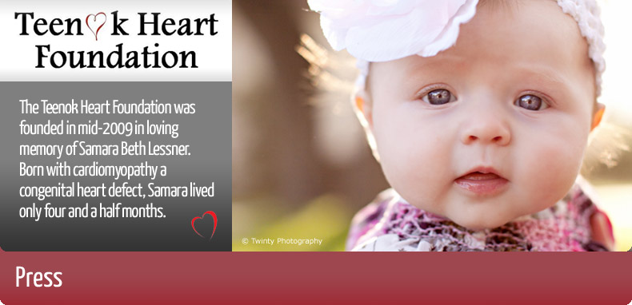

2011 NYC Half Charity Teams Make a Splash
"Charity runners took on the 13.1-mile challenge today, raising valuable funds for causes that have touched their lives and inspired their healthy habits. There were 66 official charity teams in the race, including Fred's Team, which supports Memorial Sloan-Kettering Cancer Center, and ..." read more>>

10th Annual Nautica New York City Triathlon Expects to Raise More Than $2 Million for Various Charities
"More than 3,000 athletes from 44 states and 23 countries will take the plunge into the Hudson River along Manhattan's West Side in Riverside Park (at West 99th Street) for the 10th Annual Nautica New York City Triathlon on Sunday, July 18, 2010, beginning at 5:50 AM. Organizers..." read more>>
Muddy Buddy
"MYFOXNY.COM - Weekend warriors are getting down and dirty through 'Muddy Buddy' races. The competition involving a variety of obstacles including cycling and crawling, mostly through mud, is growing in popularity. The Big Mud Run sponsored by Columbia Athletic gear..." read more>>
The I Heart Teenok Party
"The I Heart Teenok Party/Teenok-A-Palooza took place on Thursday April 15th, 2010. Young philanthropists came out to the exclusive first annual event held at the 5th Avenue Club, an extravagant chic private lounge in midtown Manhattan, to support the Teenok Heart Foundation..." read more>>
Cohen Children’s Medical Center Opens Pediatric Cardiology Satellite Office in Lake Success Quadrangle
"The new office, located within a mile from the CCMC’s main campus in New Hyde Park, is staffed by physicians, clinical nurses, echocardiographers and fetal echocaridographers, and rhythm and adult congenital specialists...
Among the features of the new practice is a display of child-focused artwork donated by Teenok Heart Foundation." read more>>

 site by HOVERSPARK
site by HOVERSPARK